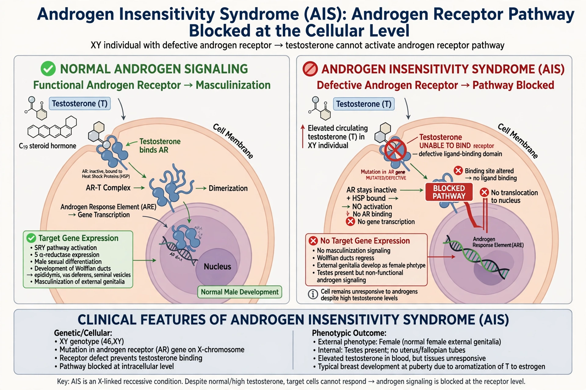

Androgen insensitivity syndrome (AIS) is an X-linked condition in which a person with XY chromosomes is partially or completely unable to respond to androgens due to mutations in the androgen receptor (AR) gene.

In complete AIS (CAIS), the body develops female external genitalia, with testes internally, absent uterus, and primary amenorrhoea at puberty. Partial AIS produces a spectrum of undervirilisation. Mild AIS may present only with infertility.
Care involves multidisciplinary support, decisions about gonadectomy timing (cancer risk is low before adulthood), hormone therapy and psychological support. See sex linkage.